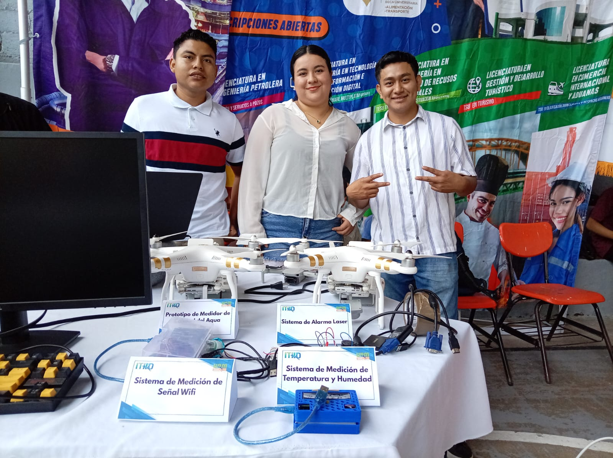
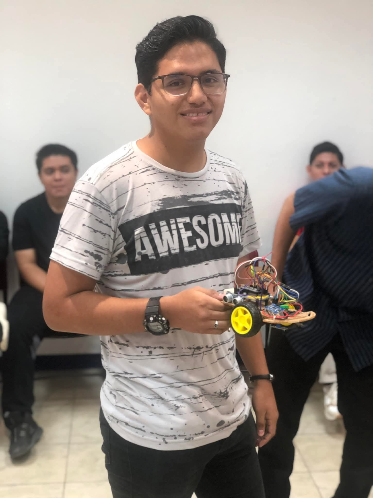
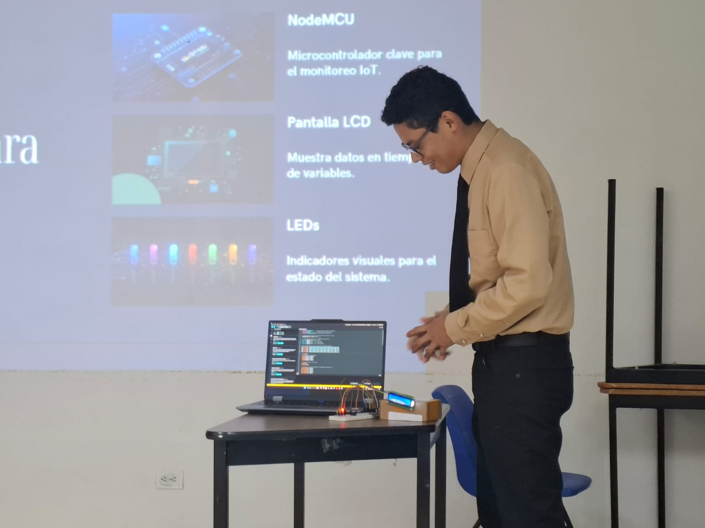
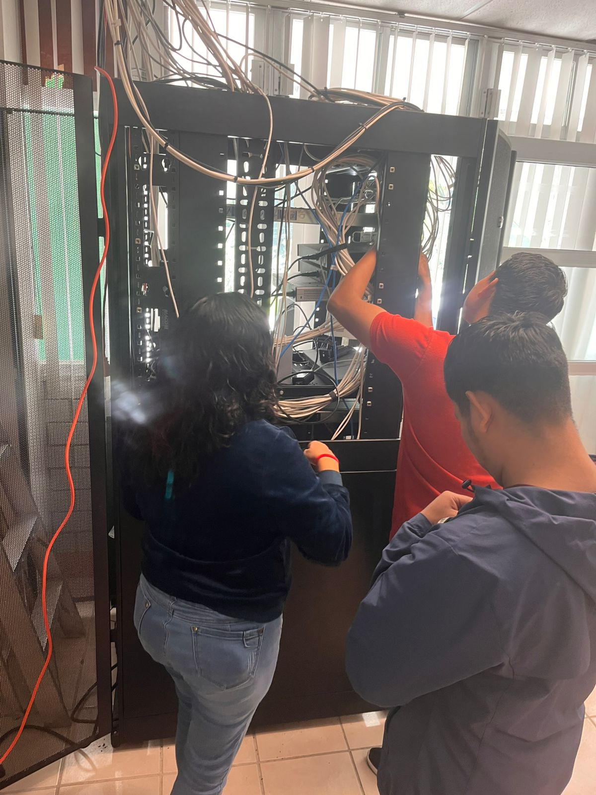
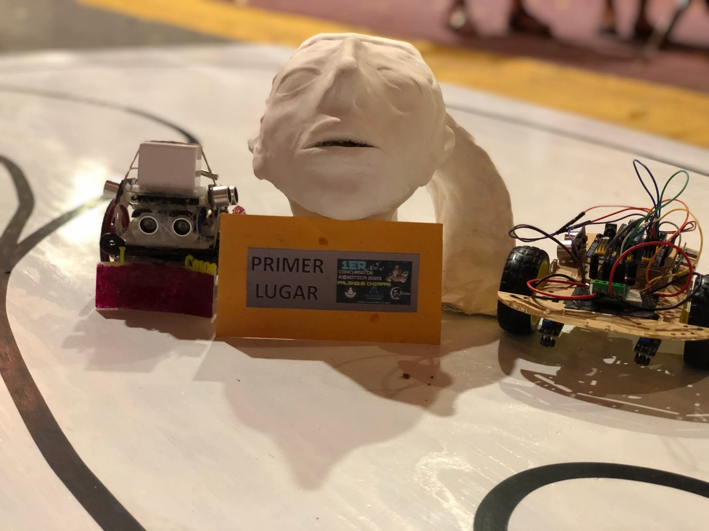
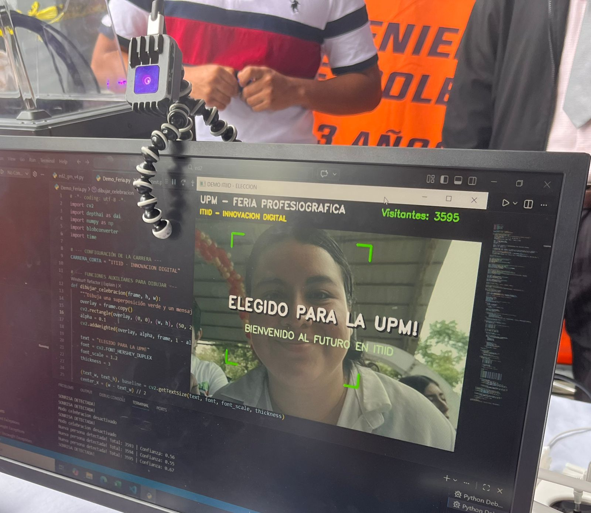

Escolarizada y Mixta
3 años y medio
TSU + Ingeniería
80% práctica y 20% teoría
Los aspirantes a esta carrera deben tener interés en la tecnología, la innovación y la resolución de problemas mediante herramientas digitales.
Al finalizar la carrera, el egresado de Ingeniería en Tecnologías de la Información e Innovación Digital será un profesional capaz de desarrollar soluciones tecnológicas para empresas, organizaciones e instituciones.
Diseñar, desarrollar e implementar sistemas informáticos.
Administrar redes de computadoras y centros de cómputo.
Evaluar tecnologías emergentes para mejorar procesos organizacionales.
Gestionar proyectos tecnológicos en empresas públicas y privadas.
Aplicar soluciones tecnológicas considerando aspectos éticos, legales y de seguridad.
Trabajar en equipos multidisciplinarios para resolver problemas tecnológicos.
Los egresados de Ingeniería en Tecnologías de la Información e Innovación Digital pueden desarrollarse en distintos sectores del área tecnológica.
Diseño y desarrollo de aplicaciones web, móviles y sistemas empresariales.
Gestión de redes, servidores, infraestructura tecnológica y centros de datos.
Protección de sistemas informáticos y gestión de seguridad digital.
Asesoría y desarrollo de soluciones tecnológicas para empresas.
Nuestros estudiantes aprenden haciendo. Conoce algunos momentos de las prácticas, proyectos y actividades de la carrera.





